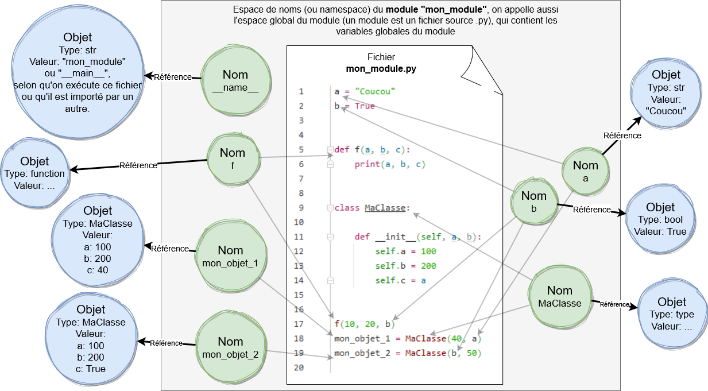
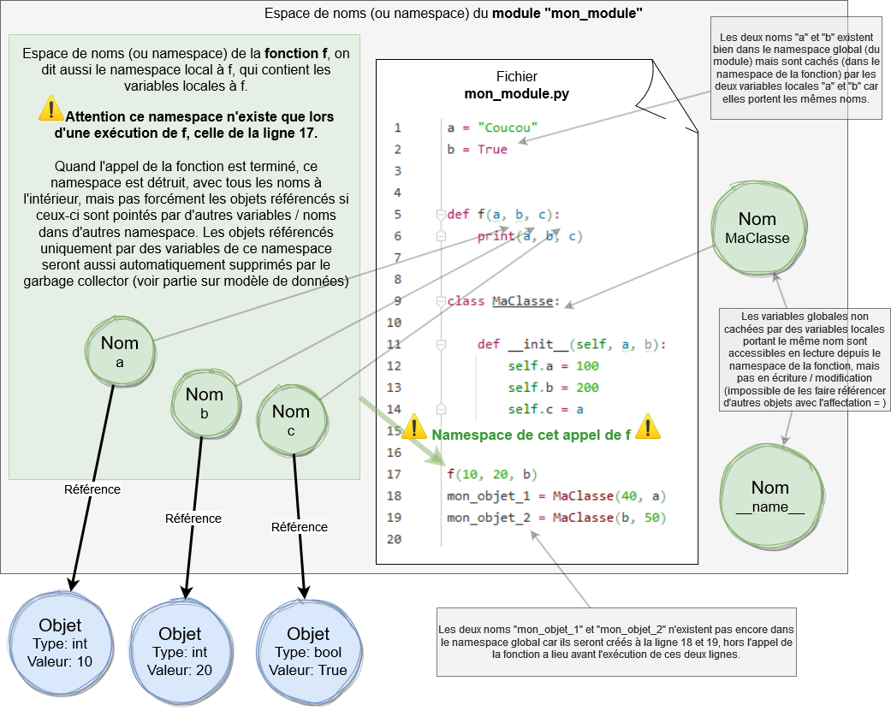
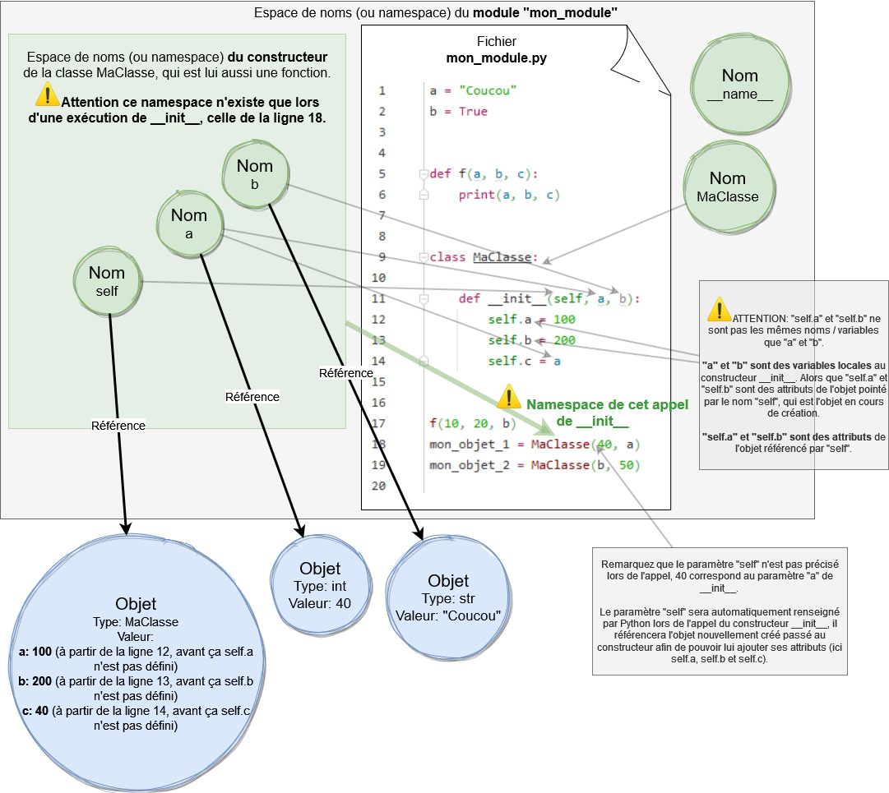
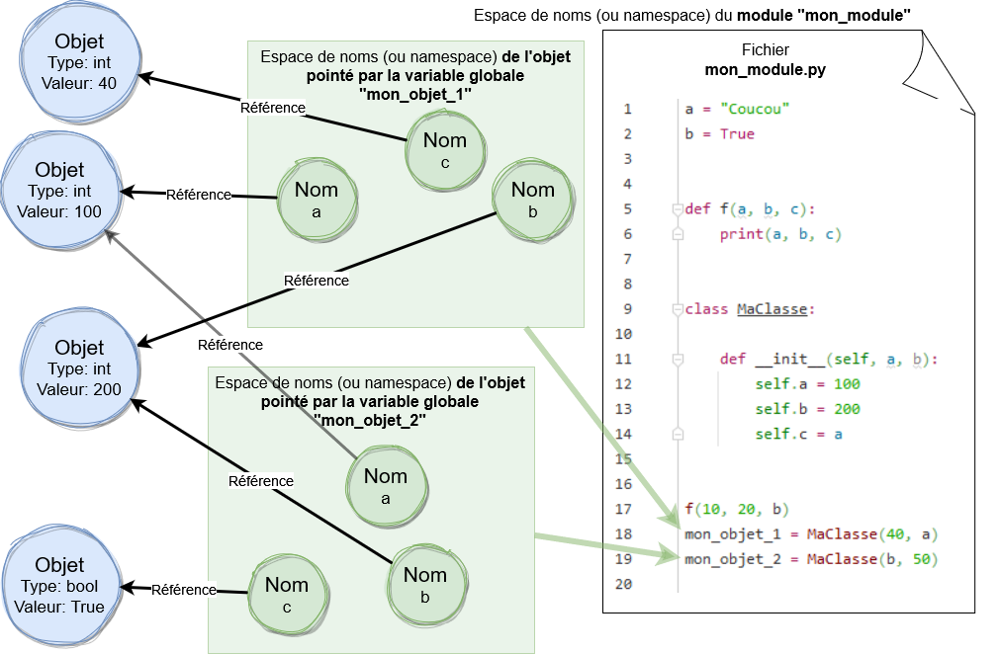

Namespaces et modules
Namespaces
On appelle namespace ou espace de nommage en français, un mécanisme en Python qui isole les identifiants dans des espaces différents. Ils sont utiles pour aider à l'organisation du code et des identifiants en unités logiques plus facile à gérer car isolées les unes des autres, plutôt que de mettre tous les identifiants dans un seul et unique sac, cela serait vite ingérable. Par exemple dans un namespace A on peut avoir les identifiants a, b et c, qui ne seront pas les mêmes que les identifiants a, b et dans un namespace B.
On définit des namespaces à chaque fois qu'on crée une fonction, une classe ou un module. Chaque instance des classes, donc chaque objet, sont aussi des namespaces. Pour les fonctions, l'espace de nommage qu'une fonction définit est créé à chaque fois que la fonction démarre son exécution, et détruit à chaque fois qu'elle se termine. Les classes quant à elles ont leur espace de nommage créé dès que le module dans lequel elles existent est importé. (Plus techniquement les namespaces sont liés à la notion d'objet, car chaque namespace est en fait un objet, et chaque objet est un namespace, les deux notions sont liées, une instance et les identifiants dans un namespace sont les attributs de cet objet)
Modules et packages
Jusqu’ici on a créé des programmes Python dans un seul fichier .py. Au fur et à mesure qu’un programme devient long et complexe, le fichier
devient difficile à naviguer et à lire, à ce moment on sépare le code dans plusieurs fichiers .py. Le mécanisme de Python qui permet de
faire cela est celui des modules avec l'importation. On appelle module un fichier .py tout
simplement. On appelle importation le fait de rendre disponible le contenu d'un module depuis un autre.
Quels morceaux du code vont dans quels fichiers sont au choix des développeurs, ainsi que le nombre et le nom de ces fichiers. Python offre la possibilité de le faire, mais nous sommes libres d’utiliser cette fonctionnalité comme nous l’entendons. En général, on place le code lié à une même fonctionnalité, ou un même aspect du programme dans un même fichier, qui doit être le plus isolé et indépendant possible des autres fichiers et donc du reste du code.
On appelle aussi les modules bibliothèques, ou librairies. Elles peuvent être dans un seul fichier, ou bien dans un ensemble de fichiers cohérents dans le cas de grosses bibliothèques. On appelle packages un ensemble de modules dans un même dossier, ils sont un moyen de structurer les modules. mais on ne les verra pas dans ce cours. Ils sont cependant un aspect important de Python à étudier plus tard.
Quand une bibliothèque comporte plusieurs fichiers, ils peuvent être inter-dépendants, c’est à dire qu’ils se référencent les uns les autres, mais idéalement le moins possible. En revanche, ils doivent être le plus indépendants possible de tout code hors de la bibliothèque, idéalement 100% indépendants de l'extérieur.
Le gros avantage lorsqu’on met du code dans des bibliothèques sous forme de modules ou packages, est qu’on peut le réutiliser où on veut, depuis n’importe quel autre fichier Python. On peut donc réutiliser des fonctions ou des classes, et éviter de devoir les ré-écrire ou les copier-coller dans plusieurs fichiers.
Exemple
Voyons un exemple de modules: soit les deux modules suivants dans un même dossier:
Un dossier/
|-- modA.py
|-- modB.py
# Ceci est le fichier modA.py, c'est donc le module modA
variable = 'Bonjour modA'
def f():
print("Une fonction dans modA")
Avec l'instruction import on peut importer un module dans un autre, pour avoir ensuite accès à ses variables et fonctions, en préfixant leur
nom par celui du module suivi d'un point, comme par exemple modA.variable.
# Ceci est le fichier modB.py, c'est donc le module modB
# On importe modA, remarquez qu'on ne met pas .py à la fin
import modA
variable = 'Bonjour modB'
# ↓ Affichera 'Bonjour modB'
print(variable)
# ↓ Affichera 'Bonjour modA'
print(modA.variable)
# ↓ Affichera 'Une fonction dans modA'
modA.f()
Grâce à la notion de namespaces les deux modules peuvent contenir des identifiants ayant le même nom (variable ou f), et
pourtant ils ne sont pas les mêmes, ils référencent des objets différents.
(schéma des deux modules modA et modB et leurs identifiants)
L'instruction import
Après qu'un module est importé, un identifiant qui porte son nom est créé dans le namespace où l'instruction import se situe (dans l'exemple
ci-dessous le nom "modA" est créé par le "import"). Cet identifiant pointe vers un objet nouvellement créé de type module correspondant au
module importé, objet par lequel on accèdera au module importé (le module modA.py dans l'exemple ci-dessous). C'est donc par cet objet qu'on peut
accéder au namespace du module que l'objet représente, et donc à tous les noms présents dans ce module.
# Ceci est le fichier modB.py
import modA
print(modA)
print(type(modA))
Executons modB.py:
<module 'modA' from 'C:\\Users\\Arnaud\\Desktop\\modA.py'>
<class 'module'>
On place généralement les instructions import tout en haut des fichiers, mais ils peuvent apparaître n'importe où.
Boucles d'importation
Attention à ne pas créer de boucles dans les importations, c'est à dire deux modules ou plus qui s'importent mutuellement:
# Ceci est le fichier modA.py
import modB # <= ERREUR: boucle avec import dans modB
# Ceci est le fichier modB.py
import modA # <= ERREUR: boucle avec import dans modA
Mécanisme d'importation
La première fois qu'un module est importé, tout son contenu est exécuté une fois. Pour cette raison importer plusieurs fois le même module, que ça soit depuis le même module ou depuis plusieurs modules, n'a aucun coût en terme de performances.
Si on execute modB.py ci-dessous, on aura à l'affichage modA exécuté ↓
# fichier modA.py
print("modA exécuté")
# fichier modB.py, on execute celui-ci
import modA
import modA # <= pas d'erreur, mais inutile
Dans un module qui est sert de "stockage" de variables, fonctions et classes, on évite de mettre des instructions globales autres que des déclaration de
variables, fonctions et classes hors de toute fonction, car elles seront exécutées lors de la première importation. Cela peut avoir des effets de bords
indésirables pour le développeur qui importera le module. Donc dans un module qui sert de bibliothèque à importer on ne met surtout pas
par exemple de code qui affiche avec print(), qui met en pause le programme avec input(), qui manipule des fichiers ou qui
communique sur le réseau hors de fonctions. On met le code dans des fonctions, et le développeur importera le module puis appellera les fonctions
qu'il/elle souhaite, afin de garder la maîtrise du déroulement du programme.
L'identifiant __name__ et le module __main__
Chaque module contient un identifiant pré-défini __name__ (avec double _ de chaque côté) qui pointe vers un objet de type
str qui a pour valeur le nom du module. Si on execute modB.py ci-dessous ↓
# fichier modA.py
print(__name__)
# fichier modB.py, on execute celui-ci
import modA
print(modA.__name__)
print(__name__)
modA
modA
__main__On peut voir que la variable "__name__" dans modA vaut bien "modA".
Par contre, remarquez une chose spéciale: ↑ la variable __name__ dans modB.py ne vaut pas "modB" mais la string
"__main__". Le module qui est exécuté par le programme Python (par exemple avec la commande python modB.py), devient le module
principal, le point d'entrée du programme, et son module prend le nom spécial "__main__". Dans replit le module qui est exécuté est le
fichier main.py par défaut, quand on clique sur le bouton Run.
Le contexte global
Ce qu'on appelle d'habitude contexte global ou environnement global, pour désigner tout ce qui est extérieur à des fonctions et classes, est en fait global au module dans lequel on se situe. Il n'existe pas de contexte vraiment totalement global dans un programme, seulement des modules chacun ayant leur contexte global. Le véritable terme qu'on devrait employer serait namespace du module, mais par abus de langage on dit souvent contexte global du module ou environnement global du module.
La fonction dir()
Vous pouvez lister le nom de tous les éléments déclarés dans un module avec la fonction dir(), qui prend un objet en paramètre, et retourne
une liste de tous les identifiants (sous forme de str) qui sont dans le namespace de l'objet. Exemple:
# fichier modA.py
une_variable = 'a'
def une_fonction():
pass
# fichier modB.py, on execute celui-ci
import modA
print(dir(modA))
['__builtins__', '__cached__', '__doc__', '__file__', '__loader__', '__name__',
'__package__', '__spec__', 'une_fonction', 'une_variable']↑ On obtient une liste de str, où chaque élément est le nom d'un identifiant: variable, fonction, classe etc.... Remarquez qu'il y a
beaucoup d'identifiants pré-définies dans le module, ceux entourés de deux caractères underscore _, qu'on peut ignorer pour l'instant. Mais
on retrouve la variable __name__, et on peut voir notre fonction une_fonction et notre variable une_variable à la
fin.
Sans paramètres dir() retourne la liste de tous les identifiants dans le namespace dans lequel elle est appelée, donc par exemple dans le
contexte global pour avoir les identifiants du module dans lequel elle est appelée.
Les fonctions vars() et globals()
vars() fait à peu près la même chose que dir() mais
retourne un dictionnaire au lieu d'une liste, qui a pour clé les identifiants, et pour valeurs les objets associés. Soit pour un objet/namespace en
particulier passé en paramètre, soit pour le namespace depuis lequel elle est appelée si aucun paramètre ne lui est passé.
La fonction prédéfinie globals() est très similaire
à vars() mais ne prend jamais aucun paramètre, et peu importe où elle est appelée elle retourne toujours tous les identifiants du contexte
global du module dans lequel elle est appelée, et leurs objets associés, dans un dictionnaire comme pour vars().
Exemple
Prenons le code ci-dessous, et voyons les différents namespaces qui sont créés automatiquement:
Namespace du module, ou namespace global:
(Attention, les objets sont toujours stockés dans l'espace unique des objets (voir partie sur le modèle de données), mais pour rendre le schéma plus lisible les objets sont montrés éparpillés autour du namespace.)
Le namespace ci-dessous est celui une fois la totalité du fichier exécuté ou importé. C'est important de le préciser, car ligne après ligne des nouveaux identifiants sont créés et sont ajoutés dans le namespace du module, donc les noms présents ou pas dans un namespace à un point précis du programme dépendent des lignes qui ont été exécutées jusqu'à ce point.
Namespace de la fonction f, ou namespace local à f:
(Attention, les objets sont toujours stockés dans l'espace unique des objets (voir partie sur le modèle de données), mais pour rendre le schéma plus lisible les objets sont montrés éparpillés autour du namespace.)
Namespace du constructeur __init__ de la classe:
(Attention, les objets sont toujours stockés dans l'espace unique des objets (voir partie sur le modèle de données), mais pour rendre le schéma plus lisible les objets sont montrés éparpillés autour du namespace.)
Namespace des deux instances de MaClasse:
Les namespaces des objets sont un peu spéciaux, car on n'exécute jamais du code dans le "contexte" d'un objet, mais dans des méthodes, où on y fait référence toujours par le paramètre "self", comme dans le constructeur tel qu'illustré dans le schéma plus haut. C'est pour cette raison que les autres variables n'apparaissent pas sur le schéma ci-dessous, car la notion de visibilité n'a pas vraiment de sens, seule la notion de nom DANS le namespace de chaque objet est pertinente. Mais conceptuellement on peut représenter les namespaces des deux instances "mon_objet_1" et "mon_objet_2" comme ci-dessous.
(Attention, les objets sont toujours stockés dans l'espace unique des objets (voir partie sur le modèle de données), mais pour rendre le schéma plus lisible les objets sont montrés éparpillés autour du namespace.)
Bibliothèque standard de Python
De très nombreuses fonctionnalités de Python sont séparées dans des modules qu'il faut importer spécifiquement. Ces modules ne font pas partie du langage en lui-même, mais forment ce qu'on appelle la bibliothèque standard. Une implémentation de Python n'est pas obligée d'inclure cette bibliothèque standard. Vous pouvez voir la liste exhaustive de tous les modules standards dans la documentation officielle.
Il existe un module particulier nommé builtins (qui signifie "intégrés" en anglais) qui est importé automatiquement d'une façon qui lui est
particulière. Il contient les fonctions qu'on a utilisées depuis toujours, comme print(), input() etc... Pour obtenir une
référence vers builtins (objet de type module) il faut quand même l'importer explicitement avec import
builtins. Une implémentation de Python DOIT inclure ce module, car il contient des éléments fondamentaux du langage. Vous avez dans la
documentation officielle la liste complète de toutes les fonctions, tous les types, toutes les constantes
et exceptions qui existent dans le module builtins.